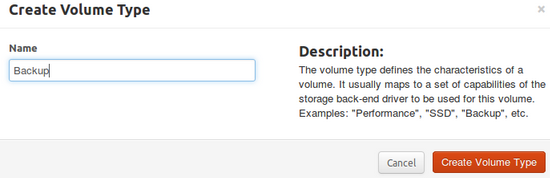
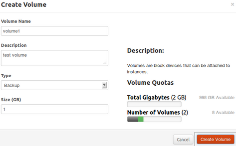
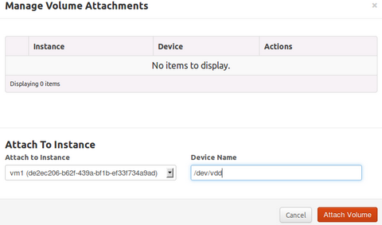
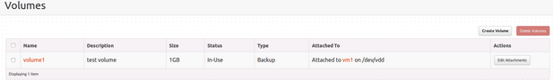

OpenStack Grizzly Installation - Single Node
Create a Cinder Volume
Cinder provides an infrastructure for managing volumes in OpenStack. Cinder services gives extra block level storage to your OpenStack Compute instances.
The following are the steps for the exercise:
Create a Volume Type
Using Cli
root@ubuntu:~# nova volume-type-create Backup +--------------------------------------+--------+ | ID | Name | +--------------------------------------+--------+ | 81fb6a1a-d927-40b0-a6ad-54a4241b9b3a | Backup | +--------------------------------------+--------+
Using Dashboard
Select Admin–>volumes–>Create Volume Type

Create a Volume
Create a 1 GB test volume
Using Cli
root@ubuntu:~# cinder create --display_name volume1 1 --volume_type Backup
+---------------------+--------------------------------------+
| Property | Value |
+---------------------+--------------------------------------+
| attachments | [] |
| availability_zone | nova |
| bootable | false |
| created_at | 2013-09-04T13:07:41.306051 |
| display_description | None |
| display_name | volume1 |
| id | 4148fb29-4f38-4d29-9503-ed3f9ca49cf6 |
| metadata | {} |
| size | 1 |
| snapshot_id | None |
| source_volid | None |
| status | creating |
| volume_type | Backup |
+---------------------+--------------------------------------+
Using Dashboard
Select Project–>volumes–>Create Volume

Attach Volume to VM
Using Cli
root@ubuntu:~# nova volume-attach vm2 310dadc8-ed30-43f1-a7fd-b474fb762cdd /dev/vdd +----------+--------------------------------------+ | Property | Value | +----------+--------------------------------------+ | device | /dev/vdd | | serverId | 73cea228-3c5d-4846-9d71-6ba14a5da374 | | id | 310dadc8-ed30-43f1-a7fd-b474fb762cdd | | volumeId | 310dadc8-ed30-43f1-a7fd-b474fb762cdd | +----------+--------------------------------------+
Using Dashboard
Select volumes–>Edit Attachments

List Volumes
Using Cli
root@ubuntu:~# cinder list +--------------------------------------+-----------+--------------+------+-------------+----------+--------------------------------------+ | ID | Status | Display Name | Size | Volume Type | Bootable | Attached to | +--------------------------------------+-----------+--------------+------+-------------+----------+--------------------------------------+ | 20767a0b-95e5-426e-9d22-cfe614e561ca | in-use | volume | 1 | SSD | false | 73cea228-3c5d-4846-9d71-6ba14a5da374 | | 310dadc8-ed30-43f1-a7fd-b474fb762cdd | available | volume1 | 1 | SSD | false | | | 4148fb29-4f38-4d29-9503-ed3f9ca49cf6 | available | test2 | 1 | Backup | false | | +--------------------------------------+-----------+--------------+------+-------------+----------+--------------------------------------+
Using Dashboard

Test the Volume
After attaching the volume, ssh in to the VM and format the volume.
1. SSH in to VM using floating IP address
#ssh cirros@192.168.0.76 #passwd: cubswin:) Enter into sudo mode: #sudo su check the partiton table: #fdisk -l
2. Create a valid partition for the volume ‘/dev/vdd'
$fdisk /dev/vdd
Device contains neither a valid DOS partition table, nor Sun, SGI or OSF disklabel
Building a new DOS disklabel with disk identifier 0x69e08462.
Changes will remain in memory only, until you decide to write them.
After that, of course, the previous content won't be recoverable.
Warning: invalid flag 0x0000 of partition table 4 will be corrected by w(rite)
Command (m for help): n
Command action
e extended
p primary partition (1-4)
p
Partition number (1-4, default 1):
Using default value 1
First sector (2048-2097151, default 2048):
Using default value 2048
Last sector, +sectors or +size{K,M,G} (2048-2097151, default 2097151):
Using default value 2097151
Command (m for help): p
Disk /dev/vdd: 1073 MB, 1073741824 bytes
16 heads, 63 sectors/track, 2080 cylinders, total 2097152 sectors
Units = sectors of 1 * 512 = 512 bytes
Sector size (logical/physical): 512 bytes / 512 bytes
I/O size (minimum/optimal): 512 bytes / 512 bytes
Disk identifier: 0x69e08462
Device Boot Start End Blocks Id System
/dev/vdd1 2048 2097151 1047552 83 Linux
Command (m for help): q
3. Create file system for the Volume
$mkfs.ext3 /dev/vdd1
4. Mount the Partiton
$ mkdir -p /mnt/data $ mount /dev/vdd1 /mnt/data/ $ df -h Filesystem Size Used Available Use% Mounted on /dev 243.1M 0 243.1M 0% /dev /dev/vda1 23.2M 12.9M 9.1M 59% / tmpfs 246.1M 0 246.1M 0% /dev/shm tmpfs 200.0K 20.0K 180.0K 10% /run /dev/vdd 1007.9M 33.3M 923.4M 3% /mnt/data $ cd /mnt/data/ $ cat > file1 HI THIS IS A TEST FILE $ cat file1 HI THIS IS A TEST FILE
Now, we can also detach /dev/vdd volume and attach it to any other instance and access the data.
FAQ's
1. If volume creation fails
Execute the below commands to fix the issues
If tgt service is running, Stop it by using the command:
#service tgt stop #service iscsitarget restart #service open-iscsi restart
If you find an error similar to this in cinder-volume.log file:
ProcessExecutionError: Unexpected error while running command. Command: sudo cinder-rootwrap /etc/cinder/rootwrap.conf ietadm --op new --tid=1 --params Name=iqn.2010-10.org.openstack:volume-19bb7c48-45f5-4034-b30b-c52863d34214 Exit code: 239 Stdout: '' Stderr: 'File exists.\n'
Then execute the below command:
#ietadm --op delete --tid=1
Note: For tid check /var/log/cinder/cinder-volume.log file
2. Check if cinder is running on the ports; Usually iscsi runs on these port
#ss -tuplen | grep 3260
expected output:
tcp LISTEN 0 32 :::3260 :::* users:(("ietd",4800,8)) ino:9045748 sk:ffff880413fb4380
tcp LISTEN 0 32 *:3260 *:* users:(("ietd",4800,7)) ino:9045747 sk:ffff880304dea1c0
Note you can also use the following command:
#lsof -i -a | grep 3260 Expected output: ietd 4800 root 7u IPv4 9045747 0t0 TCP *:3260 (LISTEN) ietd 4800 root 8u IPv6 9045748 0t0 TCP *:3260 (LISTEN) iscsid 19618 root 9u IPv4 9483329 0t0 TCP ubuntu.root:49065->ubuntu.root:3260 (ESTABLISHED)
3. I can create volumes but can't attach to an existing instance.
The work around that issue was:
- In Horizon, delete the volume that was created, because this one used tgt to create
- Stop tgt service –> tgt stop
- Restart iscsi –> service iscsitarget restart ; service open-iscsi restart
- In Horizon, create a new volume
- Then attach it to an instance